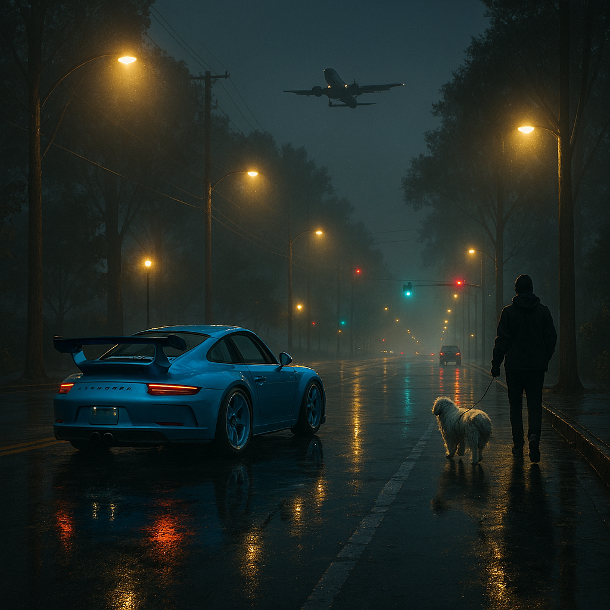

Images Project

I chose these images because they reflect my calmness and sense of freedom, especially the peaceful nighttime driving vibe. I combined four images for this project. I used masking along with brightness, exposure, and color adjustments, plus an adjustment layer to refine the final look. The most challenging part was masking because it took time to capture the details and make the shadows look realistic.
